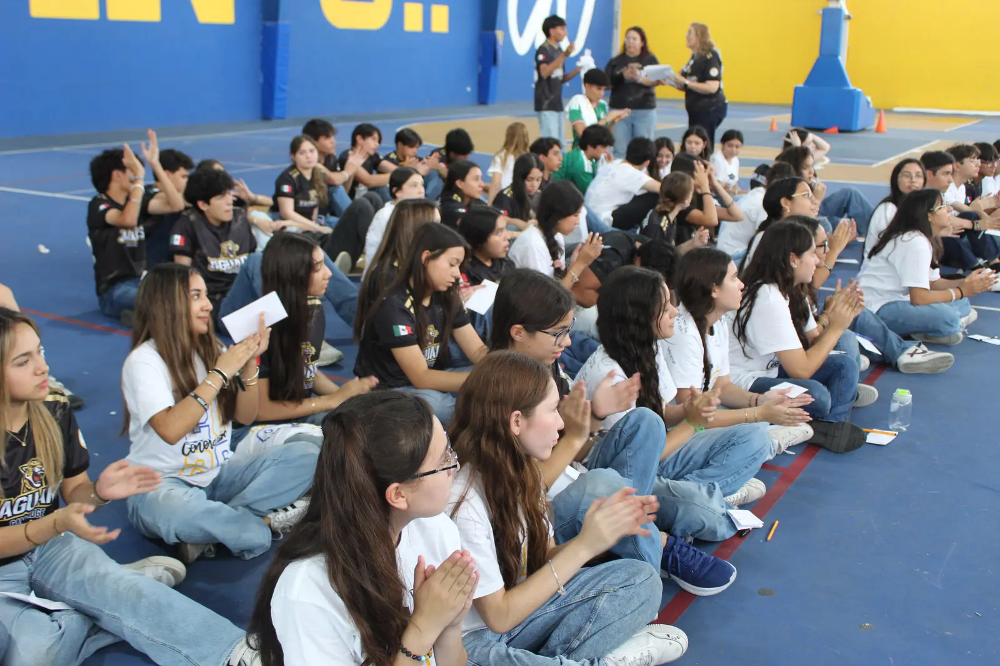
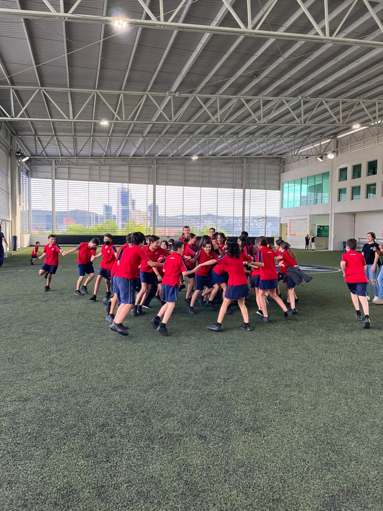
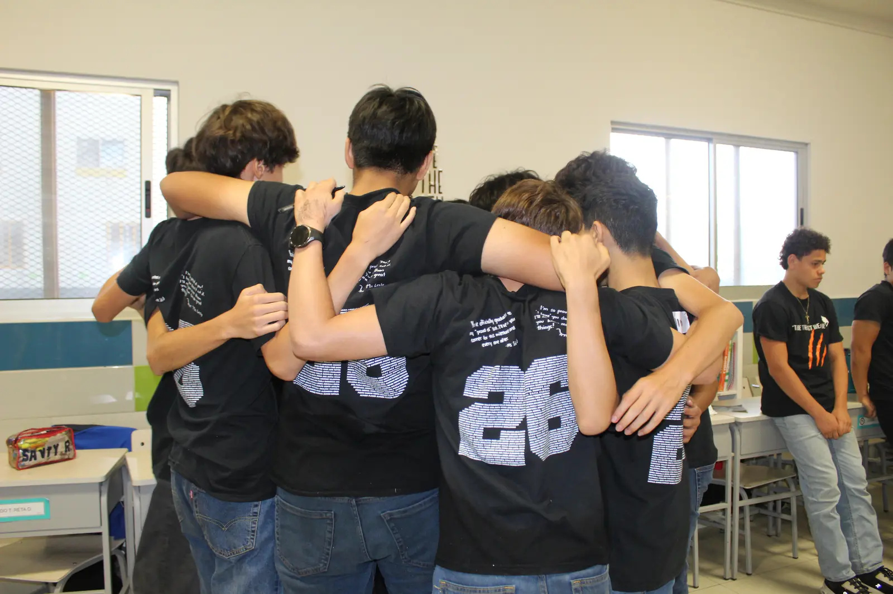
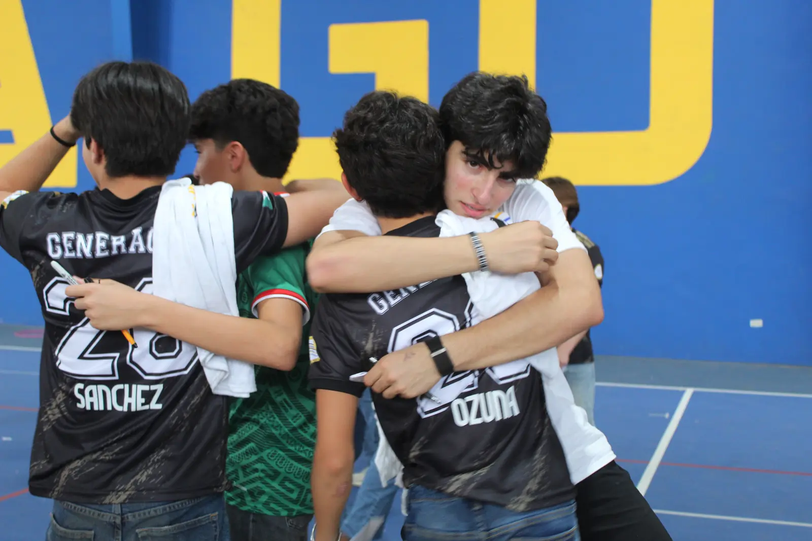

Diagnóstico · Donde todo comienza
Una fotografía clara del bienestar de su comunidad para decidir con datos por dónde empezar. No proponemos sin medir.
Punto de partida →
HOUP Educación
A todos nos enseñan matemáticas, geografía e historia. Pocas veces alguien nos sienta a aprender sobre lo que sentimos.
La rama
HOUP Educación acompaña a escuelas privadas en el bienestar socioemocional de alumnos, maestros y familias, de 4° de primaria a noveno, con retiros también en preparatoria.


Nuestro método
Un modelo construido en más de 12 años en escuelas mexicanas, para que la escuela termine operando el bienestar con su propia gente.
Quien acompaña el bienestar de otros lo vive primero.
Una clase de bienestar a la semana: atención plena, dinámica, teoría y reflexión escrita.
Un arco formativo que crece con el alumno: cada etapa, su contenido.
Medición antes y después, con lectura institucional. Nunca se califica al alumno.

Donde todo comienza
Antes de proponer, escuchamos. El diagnóstico le muestra a su escuela cómo está el bienestar de sus alumnos, maestros y familias, qué fortalezas ya tiene y por dónde conviene empezar. Lo construimos con su equipo, nunca a sus espaldas, y nunca califica a un alumno en lo individual.
Qué recibe la escuela
Duración aproximada: 4 a 6 semanas, de la junta de arranque a la lectura conjunta.
Nuestros servicios
Cada servicio se puede contratar de forma independiente o como parte del método F.L.O.R. completo.
Una fotografía clara del bienestar de su comunidad para decidir con datos por dónde empezar. No proponemos sin medir.
Punto de partida →Nuestra experiencia insignia: una generación se despide reconociendo sus fortalezas, hombro a hombro.
Insignia HOUP →De 5° de primaria a preparatoria, incluido el retiro padre e hijo.
Por grado →Sesiones y días de integración para grupos nuevos o que se reacomodan.
Grupos nuevos →Psicología positiva vivencial. La psicología positiva empieza en los maestros.
Para docentes →El PERMAH en casa, con una actividad mensual.
Para padres →Clase semanal + capacitación a maestros + talleres para familias, con transferencia de capacidad a la escuela. Este es el programa integral de bienestar que hace que lo aprendido se quede.
Programa integral →Escuelas que confían en nosotros
Momentos reales
78 alumnos en 8 equipos, acompañados por 8 Compis.
Espacios para pausar, reflexionar y conectar.
Un día para que una nueva generación se conozca.
194 asistentes. 72% lo disfrutó "mucho" o "muchísimo".
Sumamos a lo que su escuela ya está haciendo, hombro a hombro con su equipo.